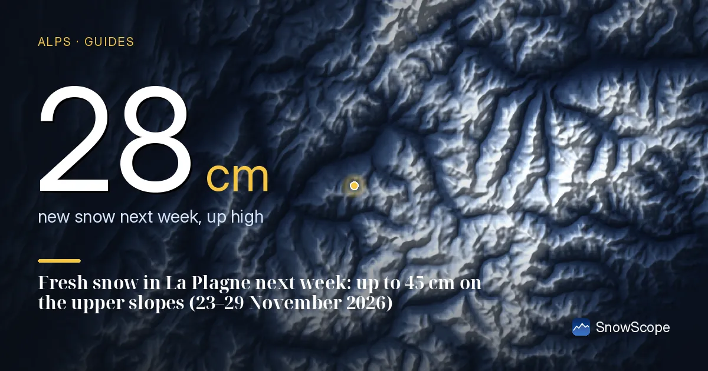
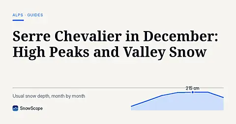

Fresh snow in La Plagne next week: up to 45 cm on the upper slopes (23–29 November 2026)
La Plagne has just had a heavy week with 99 cm at the top. The mountain now faces another round of snow from 23 to 29 November. This time, the upper slopes should catch 28 cm in the middle of the forecast range, with lows of 11 cm and highs of 45 cm, while the base gathers 17 cm.
See the live snow forecast for La Plagne in the SnowScope appSnow depth, powder alerts and the 3D map, free.
Three heights, three totals
Snow depth shrinks as you drop down the mountain. At 2900 m, the upper slopes forecast 28 cm (11–45 cm). At 2100 m, the middle band gets 26 cm (11–43 cm). Near the base at 1300 m, the forecast falls to 17 cm (4–29 cm).
The gap tells you what to expect lower down: snow will be wetter and thinner. The base layer is the weak link; if you want dry powder, stay high.

When the snow arrives
Four days carry most of next week's load. Wednesday 25 November dumps 6 cm at the top (up to 7 cm in the high case). Thursday 26 is the big day with 9 cm (reaching 14 cm). Saturday 28 and Sunday 29 add 3 cm and 6 cm respectively.
If you are chasing fresh tracks, Thursday morning or Friday morning after the Thursday storm are your best windows. The other days are lighter, so timing your runs matters.
Where to aim
The Bellecôte glacier and the Roche de Mio sit on the high, open ground where the deepest and driest snow will collect. These zones are your first choice for the best powder.
Avoid the lower edges around Montchavin-Les Coches and Champagny next week. Those slopes will see thinner cover and faster softening if the base warming continues. The purpose-built villages higher up hold snow better.
How La Plagne stacks against its peers
Next week, the same storm hits a wide area. Les Arcs (11 km away) forecasts 29 cm at the top; Courchevel (13 km away) expects 27 cm; Tignes (17 km away) lines up 29 cm. La Plagne sits at 28 cm—right in the middle.
These small differences mean the choice of resort should turn on other factors: which lifts are open, terrain you prefer, and how crowded you want to be. Snow alone will not separate them.
Uncertainty and what it means
The range from 11 to 45 cm at the top is wide because early-season storms are still unsettled. The middle value of 28 cm is a solid working number, but the actual fall could be much lighter or much heavier. These numbers refresh daily on the resort page.
Use 28 cm as your plan, but do not bet your trip on it. If the system tracks south or north, or if a warmer day passes through, the snow might arrive thinner or wetter than forecast.
What came before
The week of 17 to 20 November left 99 cm at the top (ranging from 78 to 121 cm depending on the day and local variability). That deep fresh base means next week's 28 cm will land on something solid and cold—ideal for holding powder.
At the base, only 6 cm fell earlier, so the gap between the summit and the village is sharp. Next week adds more snow to that gap.
Tips for skiers
- Avalanche risk rises with fresh snow on steep terrain. Check the French avalanche bulletin (BERA) before leaving the piste.
- Confirm which lifts are running at La Plagne before you travel; early season operations change day to day.
- Plan your week around Thursday 26 and the day after. That is when the mountain will hold the freshest snow.
- Stay above 2100 m if you want dry powder. Below that, expect wet snow by afternoon, especially late in the week.
- The range is wide (11–45 cm). The middle value of 28 cm is your baseline; treat anything above it as a bonus.
About these numbers
Resort snow depths are the deepest snow on the resort's upper slopes on the date shown; they are estimates for an area, not a measurement at one point. Forecasts can change. Always read the official avalanche bulletin before going off-piste.
Cite this report
For research, teaching or the press: the numbers and charts are free to reuse under CC BY 4.0 with this citation.
SnowScope (2026), Fresh snow in La Plagne next week: up to 45 cm on the upper slopes (23–29 November 2026), https://snowscope.app/blog/en/2026/11/la-plagne-powder-forecast-next-week-23-29-november-2026.html, accessed 2026-11-16
SnowScope (Atlas Labs). (2026, November 16). Fresh snow in La Plagne next week: up to 45 cm on the upper slopes (23–29 November 2026). SnowScope snow reports. https://snowscope.app/blog/en/2026/11/la-plagne-powder-forecast-next-week-23-29-november-2026.html
BibTeX
@misc{snowscope2026laplagnepowderforecastne,
author = {{SnowScope (Atlas Labs)}},
title = {Fresh snow in La Plagne next week: up to 45 cm on the upper slopes (23–29 November 2026)},
year = {2026},
month = nov,
howpublished = {\url{https://snowscope.app/blog/en/2026/11/la-plagne-powder-forecast-next-week-23-29-november-2026.html}},
note = {Published 2026-11-16 11:22 UTC; accessed 2026-11-16}
}· CC BY 4.0 · Methods, data and tools →
La Plagne: snow and temperature by height, this winter vs last (tools) →
Follow La Plagne
Free: a message when fresh snow is coming, and the forecast every morning.
More snow reports

Discover the calm slopes of St-Luc Chandolin where mid-mountain snow has reached 30 cm in 98 % of winters during late December.

Ski 157 km of mapped runs in Serre Chevalier where the top of the mountain has a 100 % chance of snow by mid-December.

Saas-Fee lifts reach 3556 m where our snow history shows 100 % of past winters have at least 30 cm of snow by mid-December.